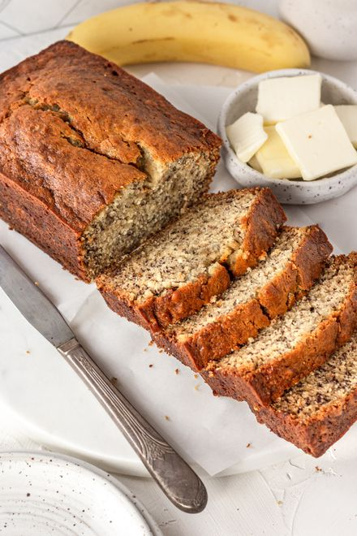

Banana Bread

Description
Classic banana bread recipe. Prep and cook time is approximately 1 hour and 15 minutes.
Ingredients
- 2 cups of all-purpose flour
- 1 teaspoon baking powder
- 1/2 teaspoon baking soda
- 1/2 teaspoon ground cinnamon
- 1/2 teaspoon salt
- 1/2 cup unsalted butter, softened
- 1/2 cup granulated sugar
- 1/4 cup light brown sugar, packed
- 2 large eggs
- 2 teaspoons vanilla extract
- 2 cups mashed ripened bananas
- 1/2 cup walnuts (optional)
Steps
- Preheat the oven to 350 degrees F (177 degress C).
- In a large mixing bowl, whisk flour, baking powder, baking soda, cinnamon and salt together.
- In another large mixing bowl mix together the butter, granulated sugar and brown sugar for 4-5 minutes.
- Mix in the eggs and vanilla extract.
- Add mashed bananas and mix until combined.
- Gently stir in chopped walnuts
- Scoop batter into prepared pan and spread evenly.
- Place pan in oven and bake for 55 to 65 minutes. Serve when cooled.